ヌンバーニの歴史
天才少女エフィ・オラデレとアダウェ財団
ナイジェリア近くのアフリカ大陸の端にあるユートピア都市ヌンバーニ(NUMBANI)。
クライシスから立ち直り、オムニック(機械)と人間が共に手を取り合って建設し、現在世界有数の科学都市として栄える
”調和の都市”だ。
展示会襲撃事件などもあり騒がしいヌンバーニで、近頃新たな知性の輝きが灯った。
若干11歳にして、ロボット工学と人工知能の分野において目覚ましい業績を、しかも”たった一人”で成し遂げた天才少女が
表彰されたのだ。
名をエフィ・オラデレ(Efi Oladele)

彼女はナイジェリアのヨルバ人であり、まさにEfi（美しい）・Oladele(富がやってきた）との
名前にふさわしいに豊かな才能を持った将来有望な科学者だ。
エフィ・オラデレは、幼い頃からロボット工学に興味があり、例えば両親がくれたキットで、
小さなドローン開発に熱中したエピソードを紹介している。更に幼い彼女の興味は家事手伝いや、
家のあれこれを助けるロボットの製作に移った。研鑽を積んだ彼女は11歳で、
ロボット工学と人工知能についての印象的な報告書をまとめる。
様々な人の目に止まったその報告書やその功績から今日、ヌンバーニで科学者達を支援する基金団体の
一つ、アダウェ(Adawe)財団の有名な「天才助成金」を受け取ることになった。
表彰台に立った彼女は次なる夢をこのように語っている。
「私は、みんなの生活を助ける物を造りたいんです。”OR15”みたいな、人々の安全を守るロボットを造り上げることが夢ですね！」
この天才助成金の表彰を受けて、お祝いに彼女の両親は一家揃ってのはじめての飛行機旅行を計画しているようだ。
[公式]インタビュー記事
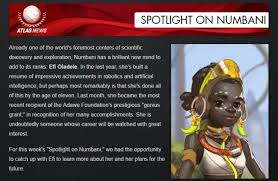
補足：OR15について
アイディーナの一部の仕様デザイン(OR14-NS)
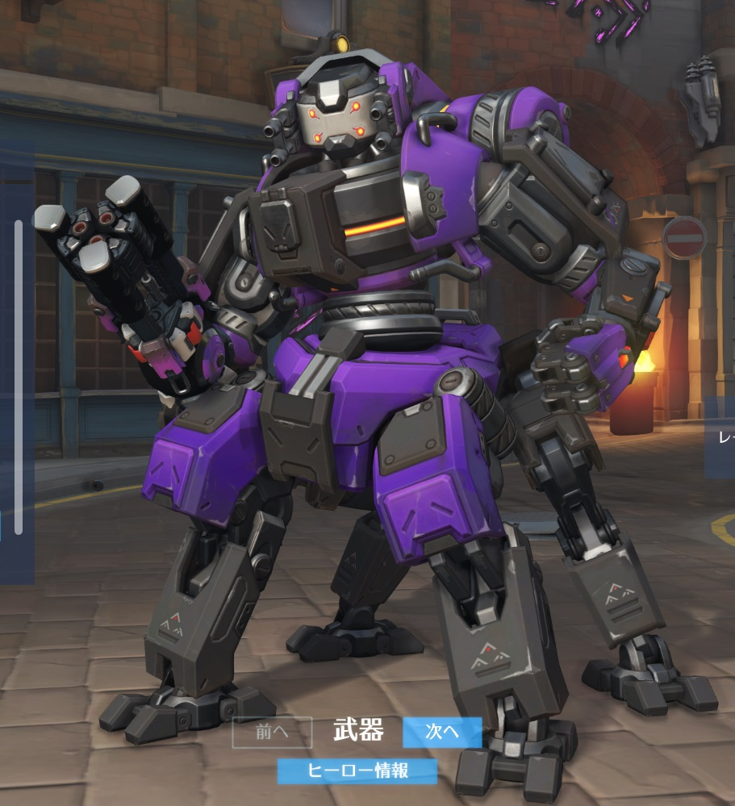
OR15は近年発明された最新型の防衛ロボットである。
オムニック・クライシス以前。ナイジェリアの大量製造用オムニウムで製造されていた
セキュリティロボットのOR14 "アイディーナ(Idina)"は、レスキュー等治安維持を目的に設計された
オムニック・ユニットであった。アイディーナは様々な事故から人間を守っていたが、
暴走したオムニックによって、バスティオンとともに「人類と戦うように特別に設計」され、
クライシスの最前線で戦闘員として猛威を奮った。
クライシス以後、バスティオン同様アイディーナも生産ラインから排除され、
もう姿を見せることもなくなっていた。しかし、クライシスから約20年余り。
オムニックと手を取り合うことを決めたヌンバーニは、様々な天災や、
特に重要な”ドゥームフィスト(Doomfist)対策”を求め、OR14アイディーナの設計を強化することを採択。
より安全で、より高機能かつ人々を事故から未然に防ぐ最新型ロボットを開発する。
それが、ヌンバーニ市民を守る希望の治安維持オムニック・ロボット「OR15」だ。
OR15は国際空港を始めヌンバーニの各所に配備され、重要な建物や事故が起きやすい人通りなどを見守り、
市民の安全を維持していた。
OR15
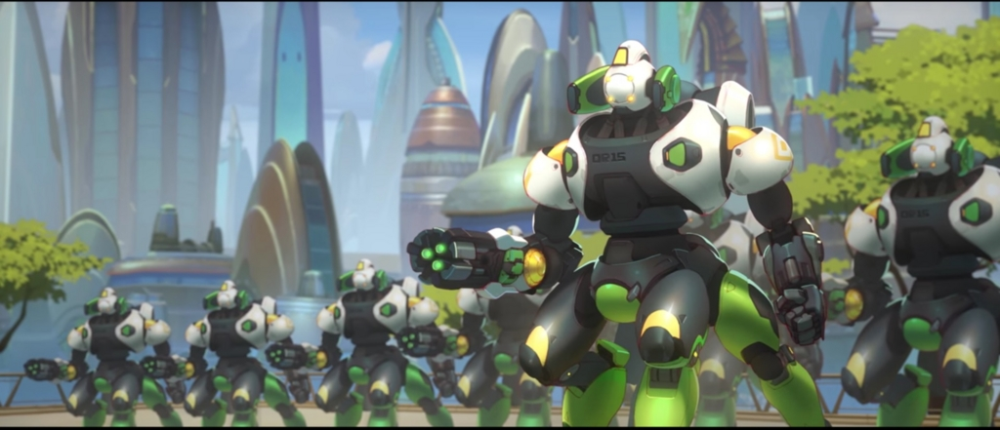
天才少女も、このOR15に平和の象徴を見ていた。
少し補足：アダウェ財団について
科学の都ヌンバーニでは、アダウェ財団が科学都市に暮らす天才達に助成金を提供している。
（「アダウェ財団」は、おそらく「ガブリエル・アダウェ」(OW内では重要人物)が創設した財団である）
それが、天才少女が受賞した「天才助成金」。
この助成金は多くの天才を次なる発展へ促すことに一役買っている。
しかしさすがは世界有数の科学都市。助成金を得るのは狭き門であり、確かな実力と才能を見せる必要がある。
ドゥームフィスト脱獄事件
とある日の早朝。
タロンというテロ組織の航空機がドゥームフィストを幽閉しているヘリックスのセキュリティインスタンスに舞い降りた。
そして、船から災厄が舞い降りる。
仲間の到着を待っていたドゥームフィストは、その手で収容部屋の壁を破壊し脱出した。
その日、絶対の信頼を持って凶悪犯を閉じ込めていたヘリックス社の監獄は、ボロボロに崩れ落ちたのだった。
逃走した彼らを追跡するものの、程なくしてドゥームフィスト達をロストした。
襲われたヌンバーニ
かつて、オムニックと人間が手を取り合う都市ヌンバーニを排除しようと、テロ組織「タロン」指折りの男が街を襲撃した。
三代目ドゥームフィスト：アカンデ・オグンディムが繰り返した破壊活動は凄まじく、
その一発で高層ビルをぶち抜くガントレットの破壊力は今でもヌンバーニ市民の間で語られている。
しかし、彼はオーバーウォッチ(OVARWATCH)が派遣したストライクチームのメンバーと衝突し、
最後はゴリラにして科学ヒーロー：”ウィンストン”により逮捕された。ガントレットは没収された。
そして、展覧会に出現したタロンの刺客もウィンストンの手によって撃退された。
一息ついたヌンバーニであったが、緊急情報が舞い込んできた。
「本日未明、ドゥームフィストがヘリックスより脱獄した」
この緊急事態に、警戒態勢を取るヌンバーニ市民とOR15。しかし、圧倒的な暴力の前に、彼らは無力であった。
国際空港に配備されていたOR15達は徹底的に破壊され、空港の壁には大きな亀裂が走った。
破壊されたアダウェ(Adawe)国際線ターミナル
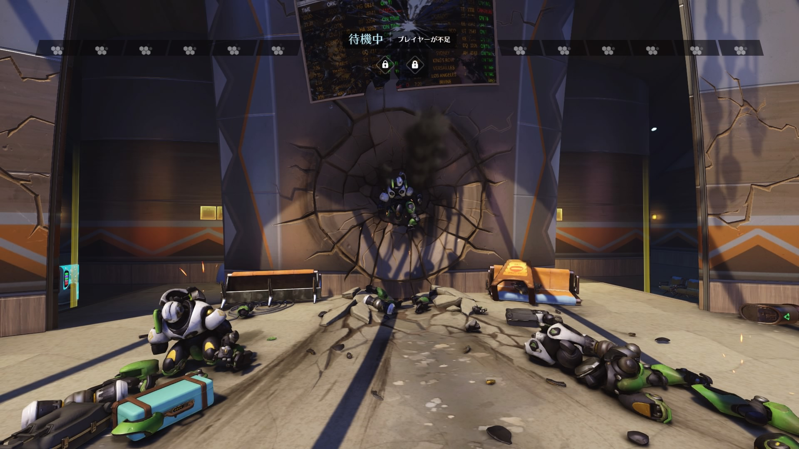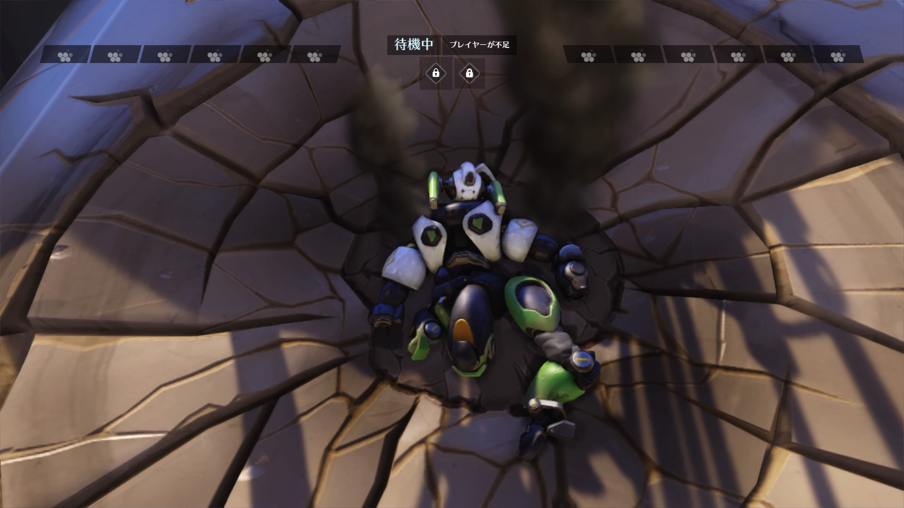
襲撃者ドゥームフィストはOR15の妨害を物ともせず、ガントレットを奪取。
散々にヌンバーニを破壊し尽くし、悠々と去っていった。
襲撃前のペイロード
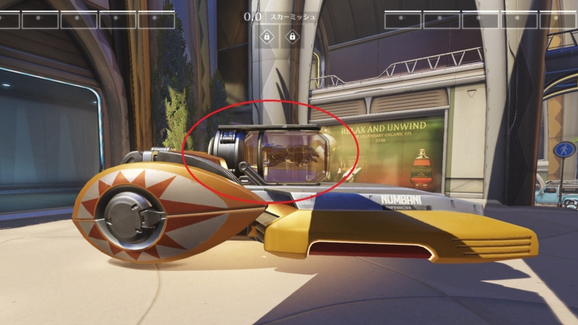
ペイロードの上のケースを割って盗まれたガントレット
 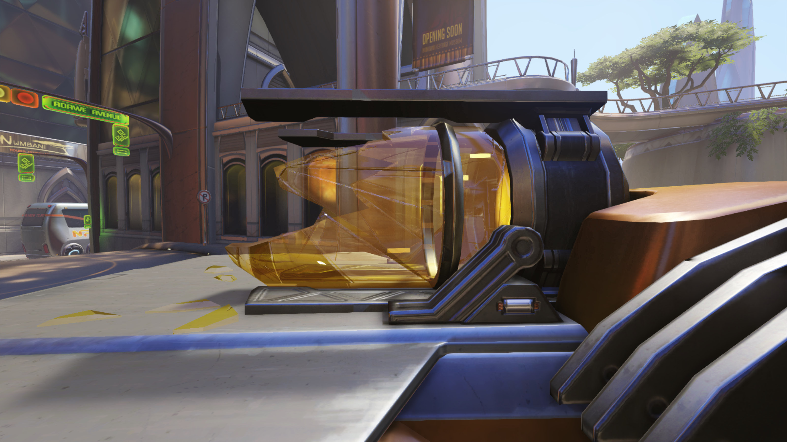
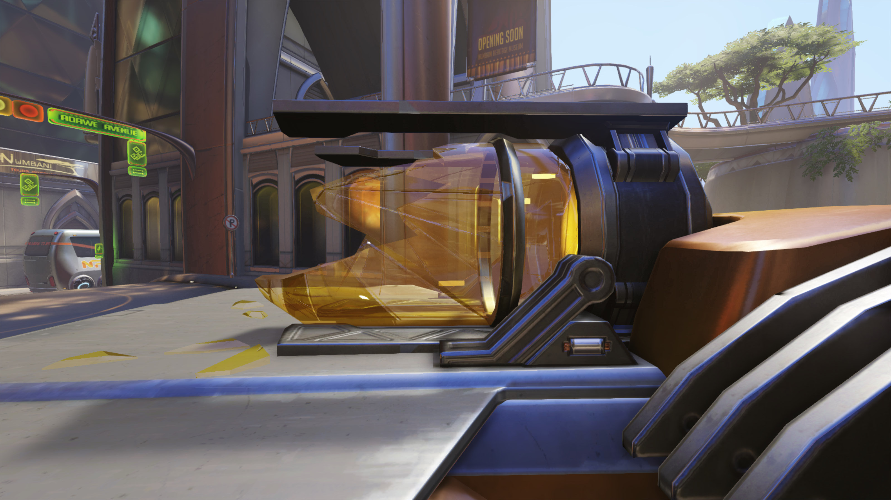
現在のペイロード
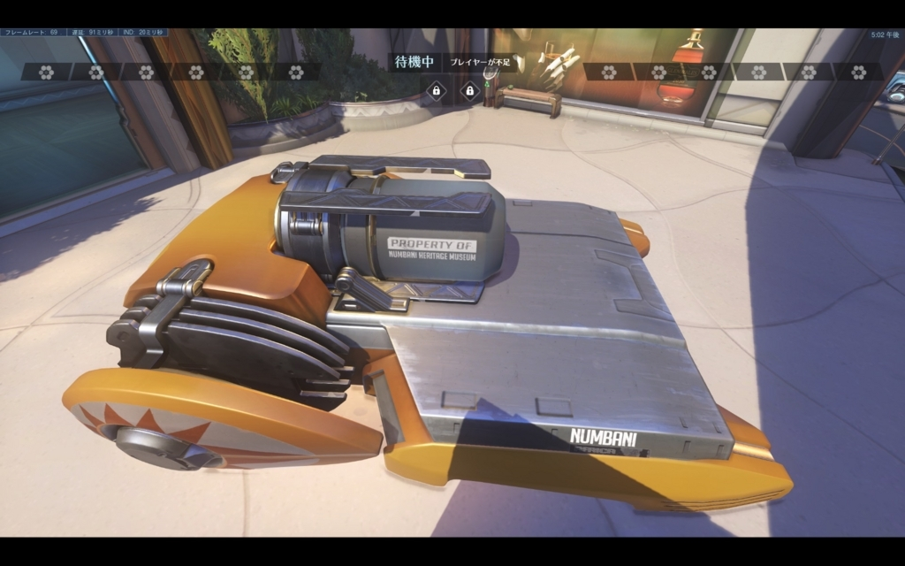
これらの事件はアトラス(Atras)ニュースで報じられた。
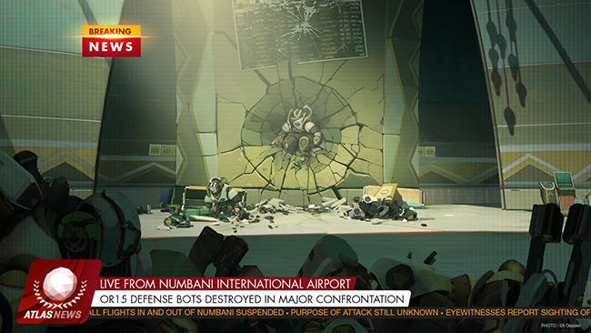
まるで大きな拳によって打ち付けられたかのように壁に埋まるOR15。
幸い民間人にけが人はいないが、最新鋭警備ロボット「OR15」の
全破壊は否応もなく”あの災害の再来”を思い浮かべてしまう。
11歳の天才少女が憧れたOR15。
ヌンバーニの最新警備は動かぬ鉄くずへと変わってしまったのだった。
復活したドゥームフィスト
この日、ついに恐るべき三代目ドゥームフィスト：アカンデ・オグンディムが世界に帰還した。
脱獄後、新たに配備されたヌンバーニの警備ロボットOR15達を一方的に破壊し、ドゥームフィストの証であるガントレットを
取り戻した彼は、現在のテロ組織「タロン」の重鎮としてかつての座に返り咲き、再び世界を混乱の渦に巻き込もうとしている。
彼の脱獄後の話はまた別の話...。
少女が見た風景
その日は、彼女にとって楽しい旅行の始まりであった。
ヌンバーニに新たに宿った知性の灯火。エフィ・オラデレは、両親に連れられてはじめての飛行機世界旅行に赴く途中だった。
自分の功績への正しい評価と栄光。この世界有数の科学都市ヌンバーニにおいて、「天才助成金」を受けたということは
それだけの価値がある。もちろん、天才助成金の表彰を受けて父母からのプレゼント（世界旅行）というのも、
ワクワクする嬉しさだったに違いない。しかし、彼女は家族旅行の直前に、国際ターミナルで確かに目撃してしまった。
壁についた大きな拳の後と、張り付いて動かない、ボロボロになったOR15の姿。
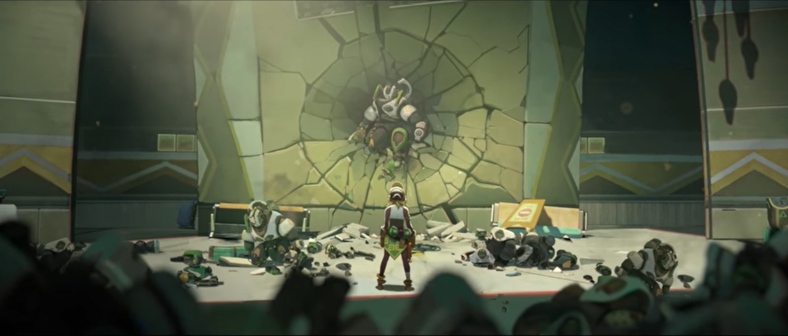
人を守るために生み出され、あこがれであった最新鋭機。そして、目の前で侵略者に一方的に虐殺されたロボットたち。
その無残な姿に、しかし少女は声を聞いた。
「みんなを守りたい」
天才と呼ばれた少女にぼろぼろになったロボットたちに”可能性”を感じたのだ。
すぐさまに、彼女は準備に取り掛かる。
壁に叩きつけられた拳。それは、天才少女が動き出す新たな船出への咆哮でもあったのだ。
Time to get to work！(仕事の時間よ！)
襲撃事件から数日後、エフィのホログラフィックチャンネル（おそらく未来のSNSやyoutubeのようなもの）に
興味深い画像が一枚ポストされた(公式のOverwatchのTwitter参照)
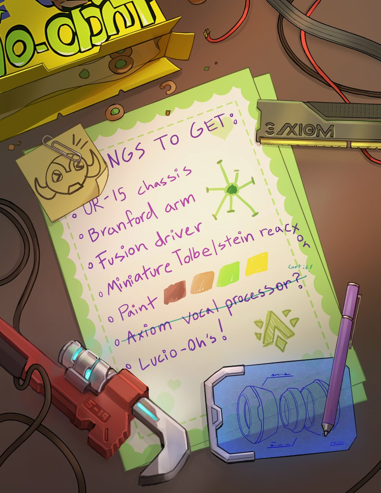
仕事の時間よ！と銘打たれたそのメモには、次に作るロボットの設計イメージと、
必要な材料が書かれている。
- OR15のシャーシ
- Branfordの腕
- FusionDriver（フュージョンドライバ）
- ミニチュア型Tolbelsteinリアクター
- 4色の塗装用ペイント
- Axiomの音声プロセッサー（入手済み？）
- Lucio-oh’s!(ルシオオース。OW内に存在するシリアル)
彼女は一体なにを作り出すつもりなのだろうか。
混乱と不安が立ち込めるこの世界に、新たなヒーローの灯火が、また一つ灯されようとしている。
「人々の役に立つ、人を守るロボットを造り上げたい」
使うものの悪意が、無邪気な少女の願いを壊さないことを今は祈るしか無い。
エフィの願い
「世界は危険でいっぱい」
11歳の少女に、この世界はとてもとても危なく見えた。ヒーローたちが排斥され、密かな暗躍や暴動、テロの影に怯える毎日。
そんな中かつての敵だったOR14を元に開発された高性能セキュリティ・オムニックOR15はヌンバーニの平和を守るはずだった。
しかし、またしても彼女の目の前で、希望の象徴OR15がドゥームフィストによって一方的に破壊される。
惨劇を目の当たりにした幼い少女。彼女の目に映る壊れたOR15は、しかしいまだ大きな可能性を秘めているように感じていた。
－－－－この子に、心をあげよう。－－－－
アダウェ財団から受け取った助成金の大部分を使い、市民政府が売却した廃業ボット、
すなわち破壊されたOR15のシャーシを一つ取得した彼女は、OR15のさらなるパワーアップに挑む。
小型のバリアシステム、ミニチュアグラビトンサージとパワーチャージシステム。Axiomのコミュニケーションシステム。
そして、適応型人工知能による心と個性。
エフィはOR15の残骸を修復して再構成し、自分自身で設計したパーソナリティコアをインストール。
パーソナリティを与えられたOR15は、新たなOR15として起動する。
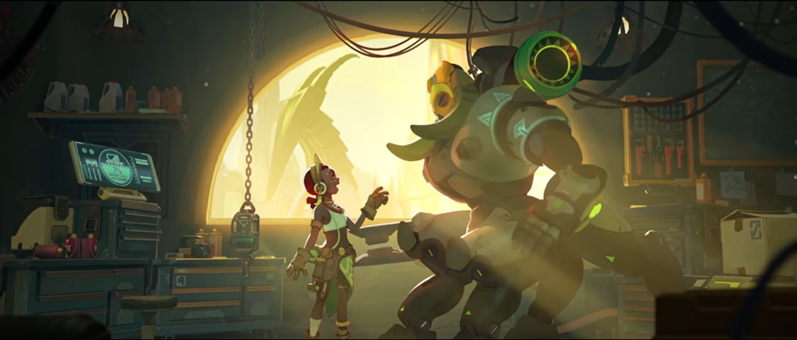
「新たな個体モジュールをインストール。
システムを再起動ーーーーーOR15オンライン」
「だめだめ、ヒーローにはちゃんとした名前がなくちゃ。
・・・そうね、オリーサはどう！」
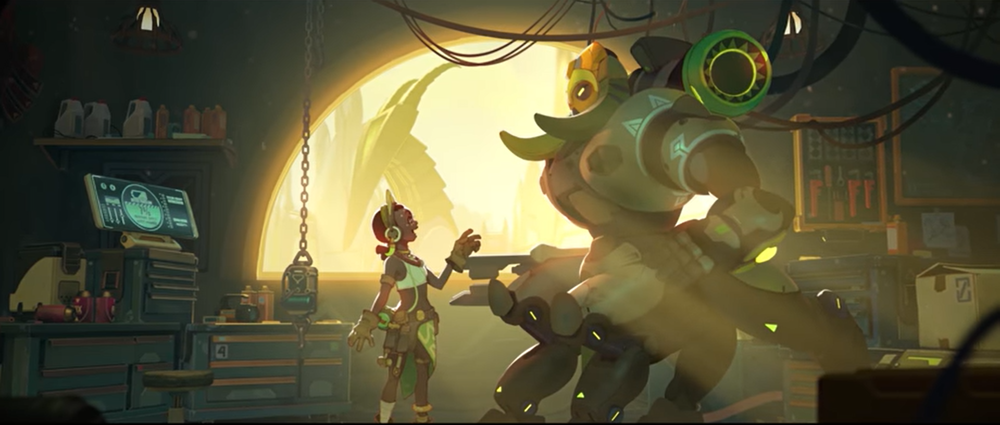
公式トレーラー
私の名前はオリーサ
オリーサは、心と個性の両方を備えた最先端技術ロボットだ。
彼女の開発者、そして母であるエフィ・オラデレはオリーサがヒーローに、そして彼女自身の物語の主人公になるように願った。
故にオリーサは、故意ではない間違いを犯す。そしてそこから学ぶ。
パーソナリティが与えられた彼女は、その適応型人工知能により自らの意思で”正しさとは何か”を学ぶのだ。
それは既に与えられたプログラム通りに動くロボットではない。ゴッドプログラムに制御されるオムニックでもない。
シャンバリ(オムニックの僧が所属する団体)が目覚めた”魂の精髄”を、エフィは科学的にアプローチしているといえる。
当然、オリーサの生まれたばかりの未熟さは、時折彼女と母エフィに多くの責任を課すだろう。
しかし、11歳の天才少女の楽観主義と、常に成長しようと頑張るオリーサの意欲によって、
現在のところ常に”正しいこと”を学んでいる。オリーサは世界と、自分と、
そしてそれらの理と仕組みについて多くのことを学びながら、
エフィとヌンバーニを守る栄誉と義務感に常に奮い立っている。
そしてそれは、彼女自身が彼女の物語のヒーローとなるための第一歩なのだ。
「私の名はオリーサ。あなたの安全を守ります。それが、私の役目。」
ドゥームフィストの脅威に怯えるヌンバーニ。そして、世界の様々な不安を感じ取る少女が生み出した新たなヒーロー。
ヌンバーニを守ろうと奮闘の末破壊された「平和の象徴OR15」のボディを引き継ぎ、
彼女は今も小さな母とその都市を守っている。
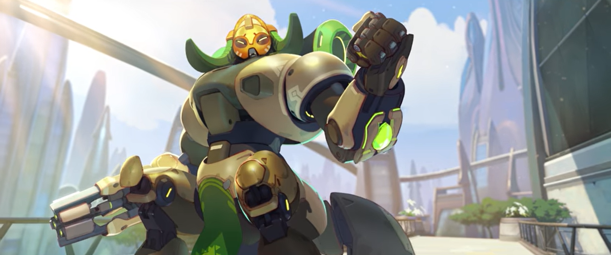
おまけ：エフィ・オラデレの功績
現在のヌンバーニのマップでは、各所でエフィ・オラデレの功績が称えられています。
博物館内
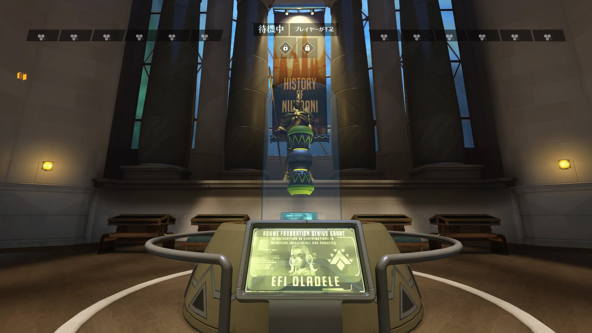
マップ内各所
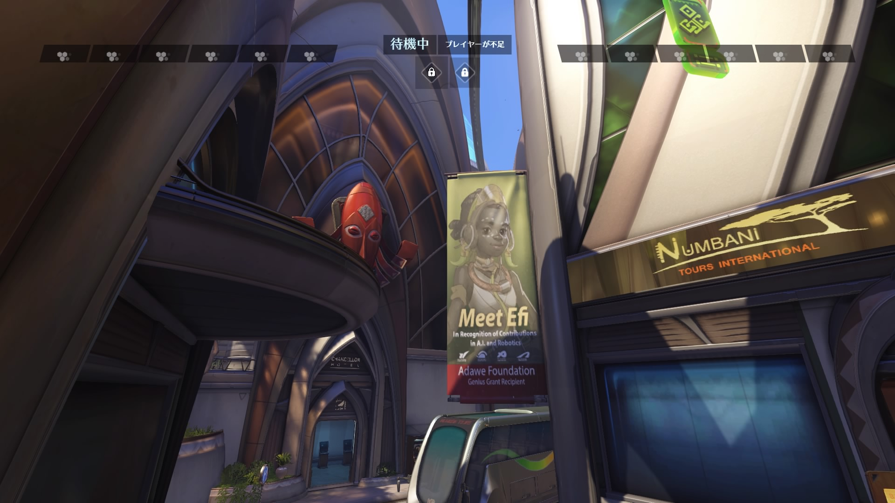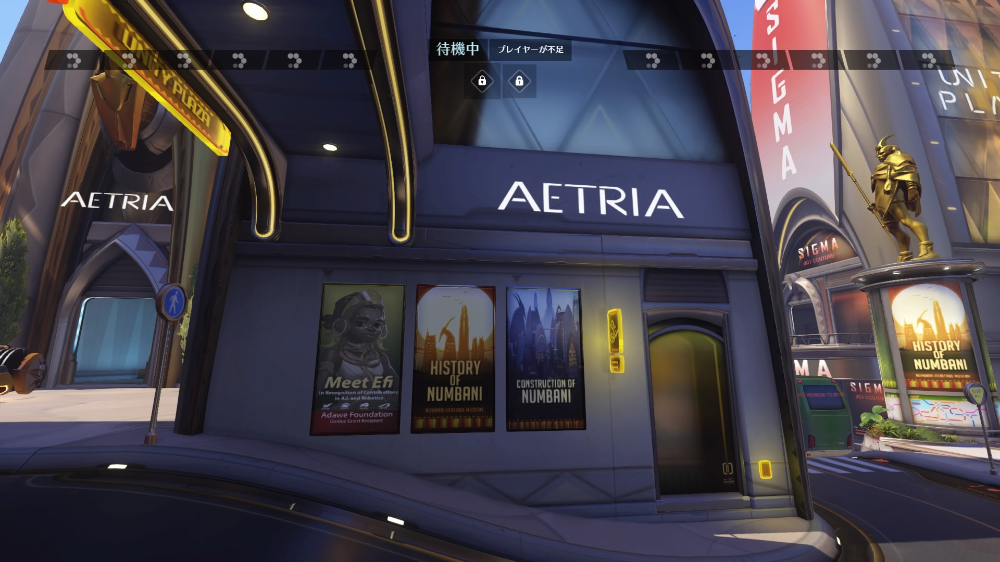